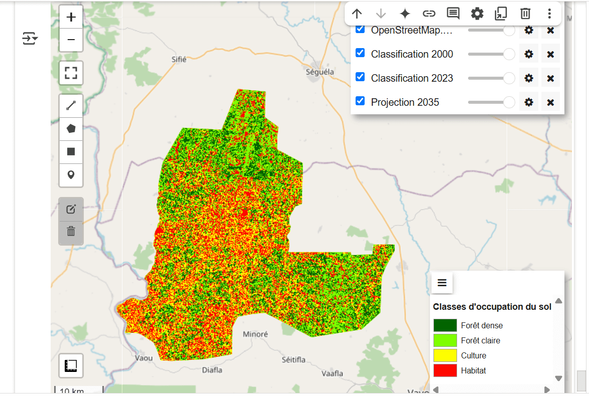
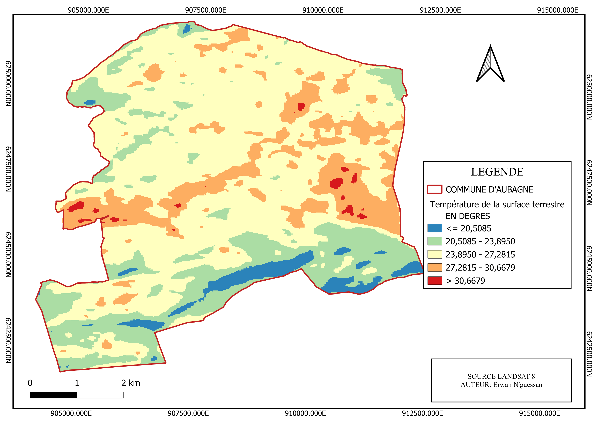
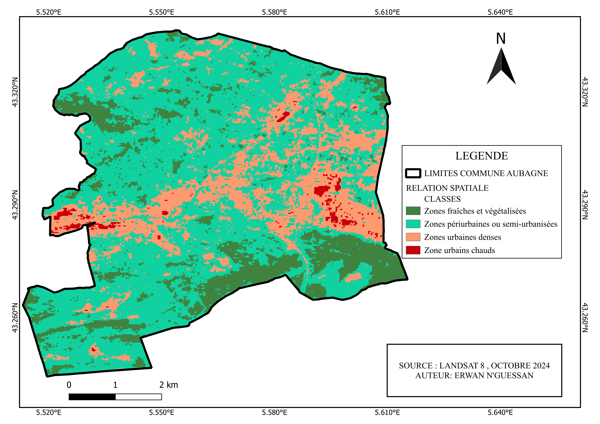

Cartes réalisées

Projection de la forêt en 2035

Température de surface

Zones fortement urbanisées

NDVI Aubagne

Centre-ville d’Aubagne – ilot de chaleur

Exemple de lieu chaud urbain

Relation NDVI / Température / Urbanisation

Carte de localisation – Yamal